Auf dieser Seite findest du meine Projekte im Überblick. Du kannst sie frei und kostenlos
nutzen. Bei einigen werden persönliche Daten erhoben. Genau Informationen findest du in der Datenschutzerklärung.

Einheitenumwandler
- Folgende Größen lassen sich (zurzeit) umrechnen: Länge, Zeit, Fläche, Dateigröße, Zeit, Geschwindigkeit
- Es lassen sich sowohl die Ausgangseinheit und die Zieleinheit auswählen
- Zu Beginn wählt man die Größe aus. Diese kann man jederzeit auch wieder wechseln.

Timer
- Auswahl zwischen 3 Tönen möglich
- Es lässt sich eine Zeit abspeichern, die dann wiederverwendet werden kann
- Timer kann angehaltet, abgebrochen oder auf die Ausgansgzeit zurückgesetzt werden

Taschenrechner
- Beherrscht das Potenzieren und Radizieren
- Enth√§lt das Zeichen ùõë
- Kann sowohl per Maus als auch Tastatur bedient werden
- Enthält über dem Eingabefeld eine Zeile, in welcher das Zwischenergebnis angezeigt wird. Wenn man mit der Rechnung fertig ist, wird dort die Rechnung angezeigt.
- Für das Radizieren per Maus erscheinen verschiedene Dialoge, welche die Arbeit erleichtern
- Es gibt spezifische Hinweise, die beachtet werden müssen. Genau Infos findest du in einer Bedienungsanleitung.
Zahlen-Ratespiel
- 3 vordefinierte Schwierigkeitsgrade und ein individueller Schwierigkeitsgrad
- Nach jeder Eingabe erscheint eine Nachricht, ob die gesuchte Zahl größer oder kleiner ist.
- Zählt die benötigten Versuche und gibt sie am Ende aus.